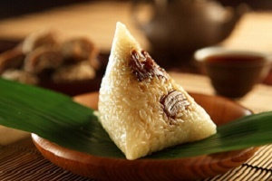
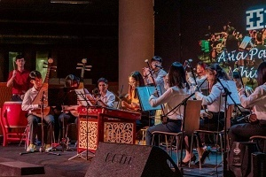
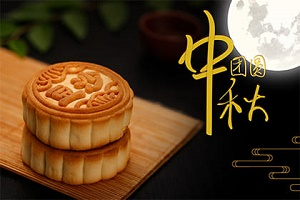
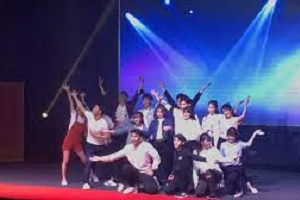
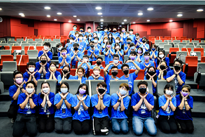

About Us
華文學會 Chinese Language & Culture Society
APU CLCS is a community that spreads and practices Chinese culture with the cooperation of
all family members who love Chinese culture a lot a would like to circulate by
generation to generation. Since year 2012, CLCS had shared the knowledge of the
Chinese language and culture by various annual events and the teams' activities in CLCS,
such as：
- Chinese New Year Celebration
- Dragon Boat Festival Celebration
- Chinese Orchestra Concert
- Mid-autumn festival Celebration
- WuFeiFan Dance Crew
- Bonding Camp
亚大华文学会是由亚大的所有热爱中华文化的亚大大家庭组成，并把中华文化世世代代地发扬光大。
自2012年度，亚大华文学会已通过学会的各种大型活动和学会里的组别活动与所有亚大的同学分享
中华文化与知识如，
- 新年嘉年华
- 端午节一日营庆典
- 华乐演奏会
- 中秋文娱晚会
- 亚大交流营





There are 5 teams under CLCS, such as
- Dance Team
- Debate Team
- Diabolo Team
- Media Team
- Chinese Orchestra Team
Do join us to learn more and spread the Chinese traditional knowledge!
不止如此，亚大华文学会也拥有5个组别团体，分别是：
- 舞蹈组
- 辩论组
- 扯铃组
- 媒体组
- 华乐组
欢迎加入我们，并学习与发扬中华文化！
- Dance Team
- Debate Team
- Diabolo Team
- Media Team
- Chinese Orchestra Team
Do join us to learn more and spread the Chinese traditional knowledge!
不止如此，亚大华文学会也拥有5个组别团体，分别是：
- 舞蹈组
- 辩论组
- 扯铃组
- 媒体组
- 华乐组
欢迎加入我们，并学习与发扬中华文化！